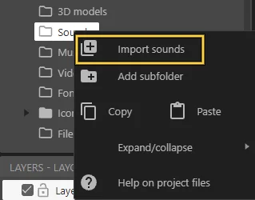
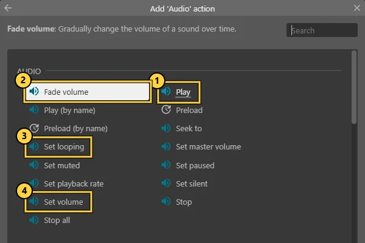
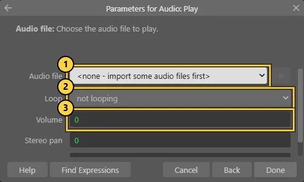
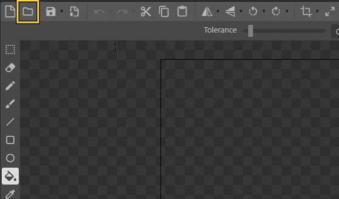
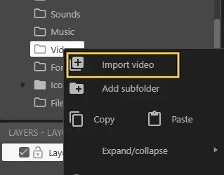
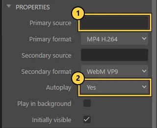

Three passed obligatory tasks
Look in Mitt UiB › Vurderingar ↗. A 1 in the box means passed.
Missing one? Week 45 may be your last chance. The task texts are on Mitt UiB.
FINAL QUEST · DIKULT105 · WEEK 50
One interactive piece about speculative digital futures. One text of 2000 words. One video. One link that works. Everything you need is on this page.
Week 50. Exact deadline: Inspera.
THE FINAL WEEKS
GATE 0 · CAN I SUBMIT?
The final assessment can only be taken when both keys are yours.
Look in Mitt UiB › Vurderingar ↗. A 1 in the box means passed.
Missing one? Week 45 may be your last chance. The task texts are on Mitt UiB.
Mitt UiB cannot show this. Tick what you came to.
The week 44 video lecture counts if you watch it.
Your own tracker, saved only in this browser. Not an official record: ask Alinta if you are unsure.
GATE 1 · THE BRIEF
An imagined future world. Not necessarily science fiction. What do you speculate will happen?
An interactive artwork, an artistic game, or a mix. It can be a sound piece.
Web design is allowed if you use it creatively. A plain website is not enough: build something unique.
10% over or under is allowed. It has a labelled link, and analyses the theme, the genre and your process.
A walkthrough that shows the work at its best, in case the examiners miss something. Speaking is optional.
itch.io is recommended. GitHub or another public host also works.
A broken or private link may fail. A nickname is fine.
FUTURE GENERATOR
Futures from the brief: climate change, pandemics, extinction, environmental loss, talking with other planets, AI and fresh water, AI and office jobs, AI and creativity.
? + ? + ?
Not your idea? Spin again. Your own idea always wins.
ROOM A · THE FUTURE FORGE
Alinta’s idea, from her lecture on design futures: the future is plural, and design can help shape which one we get.
Spin the dial. Four ways a future can go.
My future is a ___ future.Growth: Today’s systems keep going, and so do their consequences.Collapse: Something big breaks down. What is left, and who is left?Discipline: Life is reorganised around a limit: water, energy, time.Transformation: Something changes at the root: technology, society, us.
BACKCASTING · START AT THE END
Who gains? Who is left out, moved on or made invisible?
Every fix changes the problem. You cannot solve it all, but you can shine a light on it.
A warning sign, a product label, an app screen from 2050. Write your world as fact, and let the visitor step inside.
Choose a topic. See how others did it. Sketch options. Build the smallest version. Test it.
ROOM B · THE GAME MACHINE
Alinta’s idea, from her lecture on designing, creating and analysing games: a game is built from parts you can name, and every rule says something.
Tap a part. You built all five in Lab 4.
A limit on what can happen.
IN CONSTRUCT A condition.
visits ≥ 3
How the world works when someone acts.
IN CONSTRUCT An action.
Add 1 to visits
The situation right now.
IN CONSTRUCT A variable.
visits = 2
Patterns that appear while people play.
IN CONSTRUCT You do not code this. You see it when you test.
Testers tap fast to reach the message.
How it feels.
IN CONSTRUCT Sound, pace, colour, words.
Calm, tense, lonely, playful.
Choices shape what happens later.
Construct: a variable remembers the choice.
Explore rooms. Piece together what already happened.
Construct: hidden notes in rooms, like your Lab 3 secret.
Papers, Please argues through what its rules make you do. If saving water costs points in your future, your rules say something.
Rules or story? One way of studying games looks at rules and play, another at story. Your work can be both. Not a game at all? Fine. Use game parts only when they serve the work.
FLOW CHECK · USE IT WHEN SOMEONE TESTS (LAB 7)
BEYOND THE SCREEN · FROM ALINTA’S LECTURE
Aesthetics comes from the Greek aisthetikos: “of sense perception”. Not only what looks good. Seeing is believing, but looking is only one way in. The brief even names an interactive sound piece.
SOUND AS VIBRATION
Sound travels through air, water and solids, not through a vacuum. Humans hear about 20 to 20,000 Hz.
IN CONSTRUCT Add the Audio object. Right-click Sounds › Import sounds. Event: on tap › Audio › Play. A variable can set the volume.
IN YOUR FUTURE What will a future river, city or forest sound like? Make one sound the visitor can only find by listening.
TEXTURE AND PRESSURE
Museums say look, don’t touch. Digital work does not have to.
IN CONSTRUCT Touch › On hold gesture rewards patience. Drag & Drop lets them push things. Browser › Vibrate buzzes phones that support it.
IN YOUR FUTURE In your future, what can no longer be touched? Let the visitor hold, press or wait instead of just look.
KINAESTHESIA AND PROPRIOCEPTION
Knowing where your body is, and how it moves.
IN CONSTRUCT Every tick › Set position to Mouse.X, Mouse.Y (or Touch.X, Touch.Y). The world can follow, flee or copy the visitor.
IN YOUR FUTURE What in your future moves away when you come near? Or what only appears when you hold still?
VESTIBULAR PERCEPTION
Balance: the sense that tells you which way is up.
IN CONSTRUCT On a phone, Touch gives the tilt: Touch.Beta and Touch.Gamma. On iPhone, add Touch › Request permission first.
IN YOUR FUTURE A future that will not stay level: let the visitor tilt the phone to keep something from spilling.
INTEROCEPTION
Conditions within the body: heartbeat, breath, hunger.
IN CONSTRUCT Construct cannot read a heartbeat, but it can fake one: System › Every X seconds, where X shrinks as a variable grows. A pulse that speeds up.
IN YOUR FUTURE What does the body feel in your future: thirsty, tired, calm? Give your work a pulse.
DATA MADE SENSIBLE
Turning what we cannot sense into something we can. MIDI does this: control messages become sound.
IN CONSTRUCT Translate one number into another sense: a variable sets a volume, a colour, a speed. Start with your own made-up data.
IN YOUR FUTURE What is invisible in your future: the water, the air, the AI? Make it heard, felt or seen.
THE EYES-CLOSED TEST
Let someone try your work for ten seconds with their eyes closed, or with the screen turned away. What is left? That is your work beyond the screen.
Works from Alinta’s lecture “Digital art beyond the screen”. Find them by name for photos and sources, and cite what you use.
ROOM C · THE SOUND & MEDIA STUDIO
This builds on Hanna’s labs at the start of the semester: clean your sound in Audacity first, then bring sound, pictures and video into your work.
Bring it in. Record with the microphone button and keep the meter out of the red. Or drag a sound file into the window. Install FFmpeg so Audacity opens most formats.
Room tone. Record 10 seconds of silence first. Select it › Effect › Noise Reduction › Get Noise Profile. Select all (Ctrl/Cmd + A) › Noise Reduction › OK.
Cut. Zoom in. Select the “um” or the silence, listen, then Delete. Edit › Clip Boundaries › Split to move a part.
Level. Effect › Normalize to -1 dB. Peaks hitting red are clipping: record again a little quieter.
Blend. Effect › Fade In or Fade Out. Overlap two tracks and use Crossfade Tracks for a smooth change.
Export. File › Export › MP3. Keep the .aup3 project file so you can edit later.
INTO CONSTRUCT · CHECKED IN THE REAL EDITOR
Right-click Sounds › Import sounds for short effects. Long music or ambience: Music › Import music.

Insert the Audio object, once per project. Then an event › Audio › Play ①. Also try Fade volume ②, Set looping ③ and Set volume ④.

In Play: choose the file ①, loop ②, volume in dB ③ (0 is full, -10 is quieter). Give it a tag to stop or fade it later.

Make it react: Set volume from a variable, or Play at object so the sound sits somewhere in the room.
Insert a Sprite (or a Tiled Background for a repeating floor). In the image editor, Load images from files.

Several images become the frames of one animation: a flickering light, a breathing wall.
Draw, photograph or make your own images, or credit whose they are. Screenshots of your work become Figure 1, Figure 2 in your text.
Right-click Videos › Import video.

Insert the Video object. Properties › Primary source ①: your video. Autoplay ② Yes or No.

In events: Video › Play, Pause or Set source to change what is shown. MP4 (H.264) plays in most browsers.
Browsers do not play sound before someone taps or clicks. Start with a “Tap to enter” screen. Test the exported itch.io version with sound on, not only Preview.
Speech in your work? Add captions or a written transcript. YouTube can draft one; correct it yourself.
Sounds from freesound.org ↗ come with a licence. Check it, credit the creator and add it to your references.
GATE 2 · THE TEXT
Write here or in your own document. Write it yourself: AI may only do light editing if you write in English.
1800 words to the minimum (1800).
On your front page, clearly labelled: Interactive work: https://… and Video walkthrough: https://… See the paper →
What future does your work imagine, and for whom is it preferred? How is your work one early step? Future forge ↑
Which genre or genres, and why? Describe how it works: rules, mechanics, state. Game machine ↑ · Genre explorer. Cite your sources.
Frame, research, try, test: how did you make it, and what did testing change? Skip “I had never used the software”. How to cite →
Optional: what the work is, in a few sentences, and what you would do next.
Saved only in this browser on this device. Nothing is sent anywhere. Keep your real copy in your own document. Suggested word counts are only a guide.
GATE 3 · THE LINK
You submit a link, not your Construct file. If the examiners cannot open it, they cannot grade it.
GATE 4 · THE VIDEO
The video helps the examiners see what they might miss. You do not have to speak.
GATE 5 · AI RULES
…unless AI is part of your theme, speculative futures.
Alinta explains this in class. Unsure? Ask her before you use it.
A text that looks mostly AI-written may not pass.
Parts that look AI-written may not be read. Light editing is allowed if you write in English.
FINAL GATE · INSPERA · WEEK 50
Ready. Upload your text to Inspera in week 50. The exact deadline is there.
The official task text is on Mitt UiB under Files. If this page and the task text differ, the task text wins.
WEEKS 48-49 · NO CLASSES
Breathe. Small and working beats big and broken. Cut one feature, keep the idea, test the link, and write about what you learned while making it.